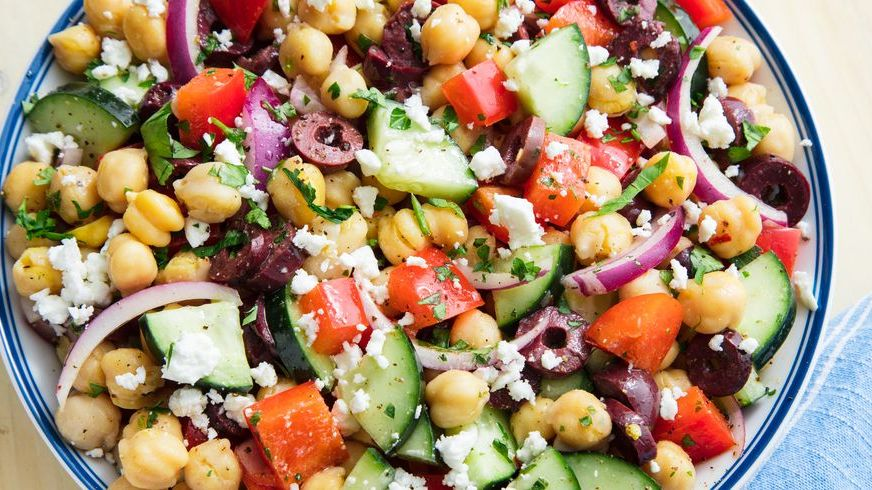

How to make Mediterranean Chickpea Salad

Description
This fresh salad packs a protein punch and will keep you full between meals!
Ingredients
- 2 (15.5-oz.) cans chickpeas, drained, rinsed
- 1 medium cucumber, chopped
- 1 red bell pepper, seeds and ribs removed, chopped
- 1/2 red onion, thinly sliced
- 1/2 c. chopped pitted Kalamata olives
- 1/2 c. crumbled feta (about 3 oz.)
- Feel free to add more here: as they say in Greece, mo feta, mo betta!
- Kosher salt
- Freshly ground black pepper
- 1/2 c. extra-virgin olive oil
- 1/4 c. white wine vinegar
- 1 tbsp. fresh lemon juice
- 1 tbsp. chopped fresh parsley
- 1/4 crushed red pepper flakes
Steps
- In a large bowl, toss chickpeas, cucumber, bell pepper, onion, olives, and feta; season with salt and black pepper.
- In a jar with a lid, combine oil, vinegar, lemon juice, parsley, and crushed red pepper flakes. Close jar and shake until emulsified; season with salt and black pepper.
- Pour dressing over salad and toss to coat just before serving.
Let us know what you think!